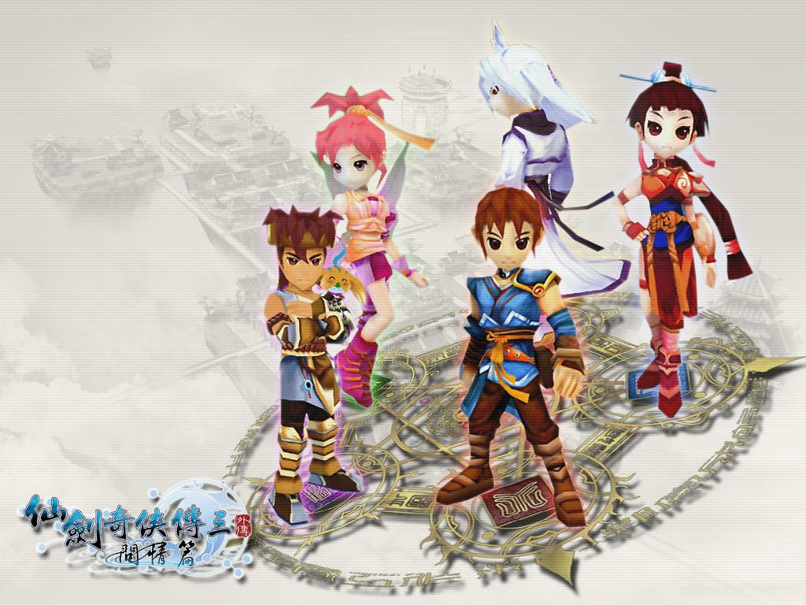

|
|
|
《仙剑奇侠传三外传·问情篇》（简称“三外”或“问情篇”）是由大宇资讯旗下的软星科技（上海）有限公司研发，于2004年推出的一款单机角色扮演游戏，是《仙剑奇侠传》系列的第一款外传性质作品。作为外传，它的立意就是解开前作中那些未解开的谜团，将仙剑系列作品做一个总结性的贯穿，连接起前三作的剧情，起着承上启下的作用。在游戏中《仙剑奇侠传三》的主角及《仙剑奇侠传一》的不少角色都出现在在主线或分支剧情中。因此，《仙剑奇侠传三外传·问情篇》既是一个新的故事，也是一场旧的回忆。
由于未知的原因导致蜀山仙境开始崩坏，掌门 徐长卿命南宫煌寻找清冷仙人并取得秘宝五灵轮，由此展开一系列蜀山奇妙地脉的旅程。南宫煌也因此结识温慧、王蓬絮、星璇、雷元戈等几位好友，更发现灾难危机的背后，隐藏了不为人知的创始天道与宿命悲情……
《问情篇》以发生在《仙剑奇侠传三》故事之后的一个事件作为引子，将长达19年的一段恩怨情仇娓娓道来。第一男主角南宫煌的父亲赤炎乃是从锁妖塔中逃出来的狼妖，与蜀山女弟子丝缎一起隐居于山野，但终究没有逃过仇家的追杀。南宫煌被蜀山派门人常纪收养，视同己出，长大后更担负起了拯救蜀山危难的重责，同时也揭开了自己的身世之谜。游戏中当然少不了“仙剑系列”一贯擅长的感情戏，两位女主角各有特色，令人难以抉择，同时游戏中还增加了友情、亲情的成分，玩家将会接受一次情感浪潮的冲击。
http://www.yxdown.com/SoftView/SoftView_32936.html#dizhi